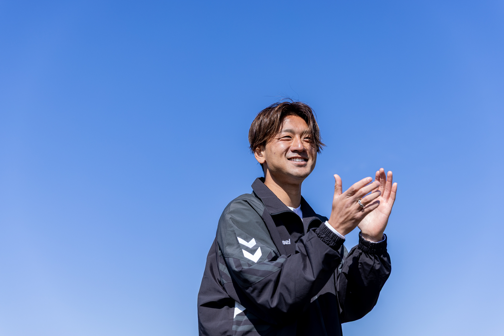

代表メッセージ
自分に何が残るだろう。
JFAアカデミー福島で学び、ファジアーノ岡山でプロの一歩を踏み出してから、AC長野パルセイロやFC今治、大宮での日々を経て、湘南ベルマーレへ。さまざまなチームでプレーしてきた中では、思うようにいかず悔しい思いをした時期もあれば、仲間とともに勝利をつかんだ嬉しい瞬間もありました。その一つひとつが、今の自分をつくっています。
だからこそ、日々サッカーと向き合う中で、漠然とした将来への不安や、これまでお世話になってきた人々・環境に対して、自分に何かできることはないかと悶々としていました。
福井県福井市に生まれ、中学で親元を離れJFAアカデミー福島へ。
両親は昔から、「サッカー選手になりたい」という夢を全力で応援・サポートしてくれました。
何か恩返しをしたいと考えていたとき、思いついたのがWAKABA杯です。
ふるさと福井出身のJリーガーは、決して多くありません。それでも地元に帰ると、サッカーが好きな子どもたち、そして大人がたくさんいる。ここだなと思いましたね。
テクノポート福井スタジアムにて、第一回WAKABA杯を開催。
WAKABA杯では小学生のサッカー大会やエキシビジョンマッチ、ビンゴ大会などを行いました。
第一回で強く感じたのは、未来を担う子どもたちに、安心して夢を追い続けてほしいということ。
目をキラキラさせながらプレーする姿を見て、「サッカー選手になりたい」と願っていた子どもの頃の自分を思い出しました。
驚いたのは、小学生チームのコーチや保護者の皆さんがとても協力的だったこと。エキシビジョンマッチでは、大人のほうが楽しんでいるのではと思うほどでした（笑）。
昔お世話になった監督や友人、地元のテレビ局の方々も駆けつけてくださり、たくさんの方々の協力のおかげで大会を開催でき、本当にうれしかったです。
選択肢も比較対象もあふれる現代。いい面もたくさんあると思いますが、「プロで生きていけるのはほんの一握りだから」と夢にブレーキをかけてしまうのは、もったいない。
自分自身、サッカーを通してたくさんの人と出会い、人生が豊かになりました。
こんな生き方・キャリアもあるんだ！ということを、これから私自身が証明していきたいですね。
